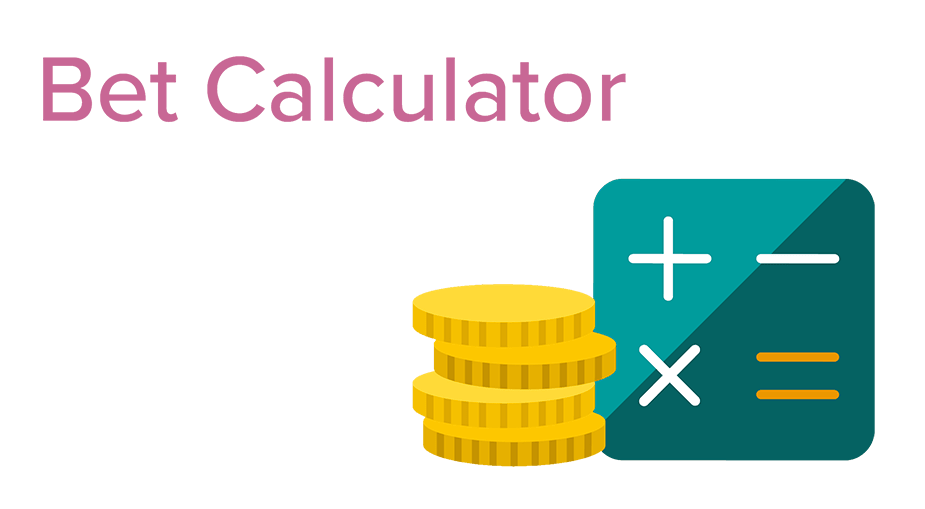

BEST BETTING APPS WITH FREE TIPS
Let us get real- betting is not an easy task. People make it look like it is all fun and games with their huge winnings. They call it luck; others call it a skill while others call it experience. Either way, you can get carried away with how blissful things sound and end up placing a bet. Now, here is the thing that people do not tell you- betting is hard. Not only do you rely on luck, but you also need to be knowledgeable as to placing wagers. Many people dive into the deep end in their first instances, and they come out saying ‘never again.’ Avoid making this mistake by using the following apps. Not only will they give you a feel of what it is like to bet, but they will help you learn a lot about it. Here goes:
Are you sure of how much money you stand to make if the wager goes through? This app helps you figure that out. That way, you can decide if the bet is worth the risk. It also loops you in on bonuses, thus helping you make an informed decision. Additionally, it provides you with an array of betting choices, and you can use these for comparison.
Bet Comments
If you want bet tips from pros who have been there and done that, this is the app to use. The tips delve into what to look out for to place a bet with a high chance of winning. There is no such thing as a sure bet. The industry is all about odds, which can change at any given time. However, you can shelter yourself from some of these changes by paying attention to the teams of your choice. Learn how to read statistics and to analyze them such that you can make a prediction. This app will do that for you by looking at the conditions of the match. It will show you which bet is a high risk, what is low risk, and what lies in-between. The tips gained here will go a long way in helping you get some wins.
BetGuru
Here, you get into the deep end of the swimming pool. The catch, however, is that you have a floater with you all the while. What does all this mean? Well, this app gives you a feel of what it would be like to bet on a real-time event. Suppose there is a soccer match taking place, and you feel that a particular team is stronger. What should you do? Should you take your hard-earned money and wager it on a hunch that could be wrong? No, you place a wager on this app without any cash and see how it plays out. In this way, you can tell if your analytical skills can come in handy in the real world. After several tries, you can let go of the floater and use some real cash in your bets. Remember not to rush the process and to take it one day at a time.
Bet Predictor
Football is one of the hardest spots to bet on, and one with very lucrative earnings. Thus, if you want to make some money out of this sport, you should come armed with information. People spend days analyzing rival teams in the hope of getting it right. But with technology, why should you spend so much time on analysis? This app can do half the work for you. It takes thousands of results and uses these in coming up with a prediction. You haven’t got the time to pore over that many matches. Use this time-saver the next time and sit back, awaiting the outcome.
Bet Data
How would you like to hear from betting experts in the industry? Well, thanks to this app, you can do so at the tap of a button. It features an intuitive display as well as some simple functions. You get access to tips from pros regarding soccer matches in varying leagues. It also shows you the likely outcomes of games, enabling you to make an informed wager.